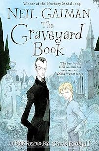
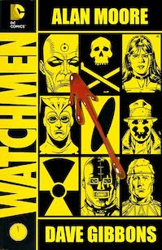
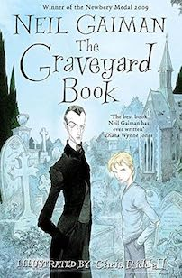
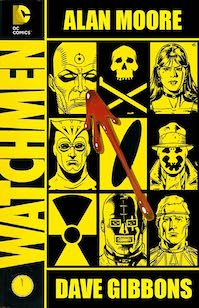
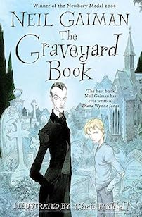
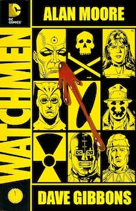

My name is Pariyapat Tasdorn. I am a university student in Debrecen.
I made this website to write about how I choose to spend majority of my free time I have many interests, but I will pick only a few to talk about. You can jump right ahead, if you'd like
Be it pop, rock, altenative, or folk songs. Thai, Western, or other languages, I like them all!! Here are some of my favourite artists. You can click on the picture to enjoy some music!
I like all kind of books whether it is fiction, nonfiction, comics, or manga. I will show you some of my favourite from the top of my head. Please check out thses books when you have time to spare. You will not regret it!


A "Movies Enthusiast"
Growing up, my family has spent quite amount of quality time together in front of television. That's how I grow to love movies and soap operas. I love all genres of movies. When I am with friends, our go-to would be low-budget horror movies. When I am in a good mood, I would choose to watch rom-com. When I am with my mom, she prefer to watch drama. With my dads, he prefer action movies.
For a medium, I particularly like 3D animation. I have a chance to formed a team and made one. If you are interested, you can watch it down below!
 


